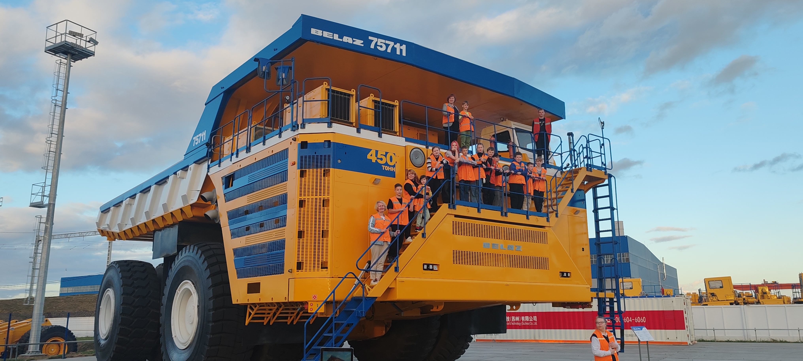
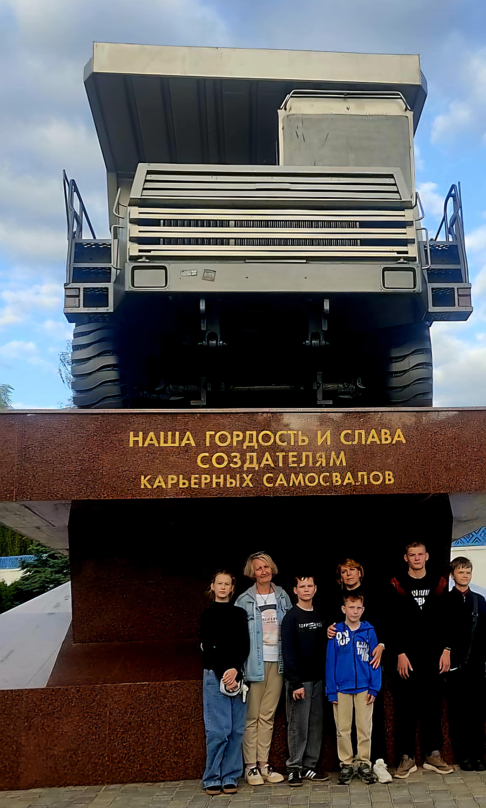
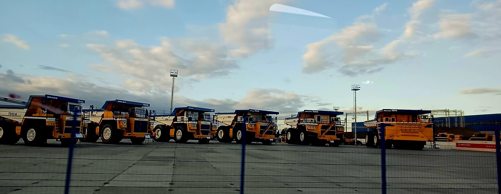

Флагман машиностроения Республики Беларусь
ОАО «БЕЛАЗ»

Белорусский автомобильный завод (БелАЗ) был создан в 1948 году в городе Жодино (БССР) как предприятие по выпуску дорожно-строительной и сельскохозяйственной техники.

Завод в Жодино был построен в 1948 году, ровно через 10 лет здесь начали выпускать самосвалы. Самый первый имел грузоподъемность 25 тонн, потом долгое время здесь производили самосвалы, которые могли перевозить 40 тонн.
Грузоподъемность машины зависит от того, сколько могут выдержать шины. Остановиться в свое время на 40 тоннах пришлось по той причине, что не было подходящих шин. Но карьеры по всему миру становились все глубже, машины нужны были больше, и БелАЗ стал активно увеличивать мощность своих самосвалов. От 25 тонн в конце 1950-х мощность белорусских грузовых автомобилей увеличилась до 450 (!) тонн.

Сегодня самые маленькие самосвалы, малыши, которые выпускает БелАЗ имеют мощность — 30 тонн.
Самые же большие, которые в карьерах похожи на мурашек, на территории завода поражают тем, какие они огромные, так:
Машина с грузоподъемностью 450 тонн — гордость БелАЗа. Этот самосвал даже занесен в Книгу рекордов Гиннесса. Во время испытаний машина справилась с грузом общей массой 503 тонны, хотя ее заявленная мощность — 450 тонн, что сопоставимо с силами табуна из 4600 лошадей. Этот самосвал весит 360 тонн, его высота — чуть больше 8 метров. Каждая из восьми шин самосвала выдерживает около 100 тонн. Такую машину в среднем делают 5 месяцев.
Машину ведет один человек. Чтобы управлять ею, нужно иметь права категории C, определенный стаж вождения да еще пройти специальные курсы. Козырек над кабиной водителя создан специально, чтобы защищать управляющего машиной. Чтобы такой самосвал проработал примерно 10–12 часов, требуется около 5600 литров топлива.
БелАЗ не собирается останавливаться на достигнутом. В ближайших планах — самосвал с грузоподъемностью в 560 тонн.
Самосвалы БелАЗа не могут передвигаться по дорогам из-за своего размера. Машины, которые в карьерах выглядят как игрушечные, слишком велики для белорусских дорог. После сбора самосвал испытывают на полигоне, а потом разбирают на блоки и отправляют в пункт назначения железнодорожным или морским путем.
В современном мире тяжелой карьерной техники БелАЗ занимает особое положение, сохраняя за собой статус одного из ключевых игроков мирового масштаба. Сегодня белорусский производитель уверенно удерживает около 30% мирового рынка карьерных самосвалов, продолжая традиции, заложенные еще в советский период.
БелАЗ является градообразующим предприятием. Здесь работают 8,5 тысячи человек, на производстве задействован большой процент населения Жодино. Территория завода — 154 гектара. БелАЗ по сути является городом в городе.
Пройди тест для закрепления результата.
Тест